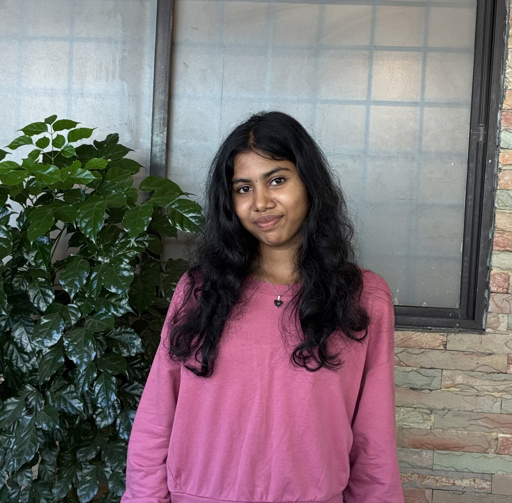

Passionate about AI-driven solutions and modern software development. Continuously exploring DSA, AI, and Full-Stack technologies while turning ideas into practical applications.

Download my latest resume to learn more about my skills, projects, and experience.
Developed an AI-driven healthcare monitoring system that uses IoT sensors to track patient health and optimize energy consumption in medical devices. Implemented intelligent agents for real-time monitoring, efficient resource management, and improved healthcare operations
Developed an AI-driven healthcare monitoring system that uses IoT sensors to track patient health and optimize energy consumption in medical devices. Implemented intelligent agents for real-time monitoring, efficient resource management, and improved healthcare operations.
Developed a machine learning model to classify toxic and non-toxic tweets using natural language processing techniques. Automated harmful content detection to support safer and more positive online interactions.
Dvein Innovation | Aug 2025-Sep 2025
• Explored Machine Learning, Deep Learning, and AI tools through hands-on learning and practical applications.
• Built a Plant Disease Prediction system using Deep Learning to classify plant diseases from leaf images and support early detection.
Arul Technology | Aug 2024-Sep 2024
• Learned core Machine Learning concepts, including data preprocessing, model training, and evaluation techniques.
• Developed a Toxic Tweet Classification project using Machine Learning and NLP techniques to identify toxic content in social media text.
College Name : Anand Institute of Higher Technology
CGPA : 9.02
Year : 2022 - 2026
Certified in Python through Infosys Springboard and GUVI.
Completed HTML & CSS certification from GUVI.
Participated in AI/ML workshops conducted by Codework and GenCrcasX, gaining exposure to emerging AI technologies.
Participated in Smart India Hackathon, MSME Hackathon, and internal college hackathons, gaining valuable experience in innovation, teamwork, problem-solving, and project development. Our project idea was also selected for Niral Thiruvizha 2026.
Attended AI/ML and Generative AI workshops, earned certifications, and gained knowledge of machine learning concepts and emerging AI technologies.
Actively learning Data Structures and Algorithms (DSA) and solving coding problems on LeetCode to strengthen problem-solving and programming skills.
pavii2625@gmail.com
Chengalpattu, Tamil Nadu, India